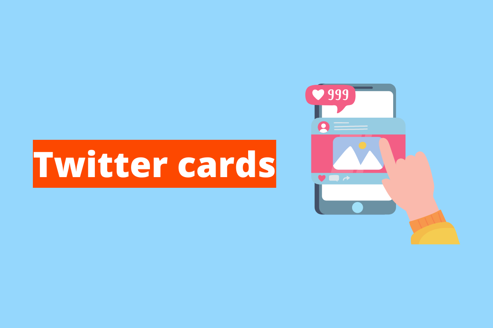

Twitter card - o rescurso para seu tweet ir além dos 140 caracteres
Apiki
Mobile First é um conceito aplicado em projetos web onde o foco inicial da arquitetura e desenvolvimento é direcionado aos dispositivos móveis e em seguida para os desktops.
A técnica tem se popularizado cada vez mais entre os profissionais de marketing e tecnologia.
O conceito de Mobile First foi elaborado por Luke Wroblewski em 2009 e 2010 no seu blog e no ano seguinte ele publicou através da A Book Apart o livro Mobile First que é uma leitura obrigatória para aqueles que queiram compreender a fundo a técnica e suas aplicabilidades.

Em projetos web de uma forma geral o foco precisa ser no usuário para que ele tenha a melhor experiência possível e cumpra sua missão no website.
Quando projetamos primeiramente para mobile somos forçados a sermos sucintos e fazer uso da melhor maneira dos poucos espaços disponíveis nas telas dos dispositivos móveis e auxiliar os usuários a realizarem suas desejadas tarefas.
As imagens acima ilustram os cenários de Desktop First, Mobile Second e Mobile First, Desktop Second.
No primeiro exemplo temos um clássico cenário de focus no desktop e aproveitamento de todos os espaços possíveis e na inserção do máximo de informação que couber na tela.
No segundo um uso racional, focado e objetivo no que as pessoas procuram em websites do segmento demostrado.
O Google entrevistou dezenas de executivos de marketing e agências sobre suas grandes prioridades e perspectivas para 2017.
Isso resultou nas “5 questões que os profissionais de marketing devem se fazer em 2017”.
A última delas foi “Is my organization building for the mobile screen first?”.
Embora o artigo seja de três anos atrás, ele nunca foi tão atual quanto agora.
Considere a leitura das cinco questões.
O crescimento móvel no Brasil é uma incrível realidade.
Os projetos web de uma forma geral precisam aplicar este conceito para explorar seu potencial e facilitar, além de uma melhor experiência para os usuários, o uso da segunda tela pelos usuários.
Uma segunda Tela (ou Second Screen) é um termo que se refere a um dispositivo eletrônico adicional (como um smartphone ou tablet) que permite ao consumidor interagir com o conteúdo que está a consumir, como filmes, música ou jogos eletrônicos.
https://pt.wikipedia.org/wiki/Segunda_tela

Quando os websites são projetados com o conceito de Mobile First a interação dos usuários com suas interfaces além de ser facilitada é agradável quando a atenção é dividida com outras telas como a TV.
Neste Blog da Apiki sobre WordPress, temos incríveis conteúdos sobre o assunto aqui abordado.
Eles poderão te inspirar e apoiar na implementação desse conceito em seus projetos digitais.
Segue a lista de uma curadoria para facilitar a sua jornada
O Mobile vem ganhando cada vez mais espaço, e espaço considerável.
Se antes a grande força estava nas questões comportamentais dos usuários, agora ela se ancora na economia.
Na Black Friday de 2019, por exemplo, 55% dos pedidos foram realizados a partir de um celular.
O faturamento foi de R$ 3,87 bilhões, um aumento de 30,9% em relação ao ano passado.
Esses números foram alcançados somente nos dias 28 e 29 de novembro.
E você está preparado, vai se preparar ou ainda duvida do Mobile First?
Twitter card - o rescurso para seu tweet ir além dos 140 caracteres
Como implementar o mobile first em projetos WordPress
O protocolo Open Graph no WordPress
Tags Para mobile first no cabeçalho da página
O seu endereço de e-mail não será publicado. Campos obrigatórios são marcados com *